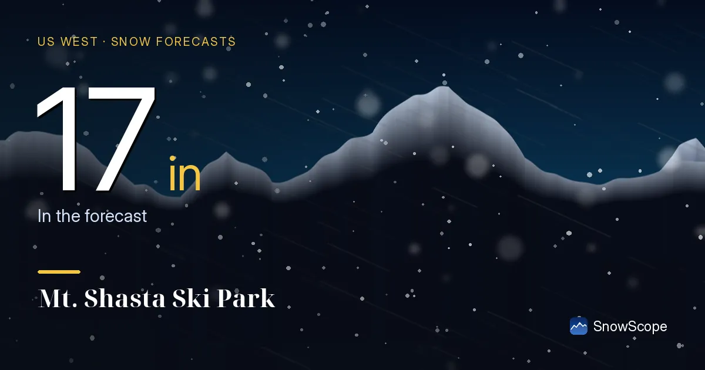

Mt. Shasta Ski Park: 17 in (43 cm) in the forecast
Mt. Shasta Ski Park will receive 17 in (43 cm) of new snow through November 14, with more accumulation at higher elevations. Currently nearly snowless, the resort is due for a significant boost.
See the live snow forecast for Mt. Shasta Ski Park in the SnowScope appSnow depth, powder alerts and the 3D map, free.
When will it snow?
The snow arrives on November 13 and 14. SnowScope shows most of the snow on November 13, when 11 in (29 cm) is forecast, followed by 6 in (14 cm) on November 14. The freezing level drops sharply during the storm, falling from about 8,270 ft (2,520 m) on November 13 morning to 5,150–5,970 ft (1,570–1,820 m) by November 14.
This steady cooling means the snow will likely be wet and heavy when it first arrives, then transition to lighter, drier snow as the cold settles in. By Friday afternoon, conditions at the summit should be dry and skiable.
| Resort | Snow depth | New snow, 72 h | Coming, next days | Top |
|---|---|---|---|---|
| Mt. Shasta Ski Park | 0 in (0 cm) | 0 in (0 cm) | 17 in (43 cm) | 7,539 ft (2,298 m) |
| Kirkwood | 8 in (20 cm) | 0 in (0 cm) | 15 in (39 cm) | 9,462 ft (2,884 m) |
| Bear Valley | 9 in (22 cm) | 0 in (0 cm) | 14 in (36 cm) | 8,484 ft (2,586 m) |
| Boreal | 5 in (13 cm) | 0 in (0 cm) | 14 in (36 cm) | 7,700 ft (2,347 m) |
| Palisades Tahoe Olympic Valley | 3 in (7 cm) | 0 in (0 cm) | 14 in (35 cm) | 8,743 ft (2,665 m) |

Where does elevation matter most?
Height makes a big difference on this mountain. At the summit, 7,539 ft (2,298 m), the forecast shows 19 in (47 cm) of new snow over the next seven days. The mid-slopes at 6,503 ft (1,982 m) will see 13 in (33 cm), while the base at 5,466 ft (1,666 m) receives only 3 in (8 cm) in the same period.
In plain terms: go higher to find the best snow. The base elevation is likely to see rain or wet mix initially, then lighter snow as the freezing level drops. Early season snow is thin everywhere, so rocks may be close to the surface even on upper slopes. Stick to groomed runs or consult a local about safe terrain.
How does this fit the regional pattern?
Mt. Shasta Ski Park sits in the drier northern part of the US West, away from the main moisture corridor that feeds the Sierra Nevada. Today, only 123 of the 195 resorts in the US West region have measurable snow. By November 14, we expect 139 resorts to have snow, and the total snow-covered area will grow from 134,530 km² today to 213,380 km² by the middle of the week.
The storm is moving north from the Pacific, so resorts farther south are already ahead. Kirkwood, to the south, already has 8 in (20 cm) on the upper slopes and is forecast to receive 15 in (39 cm) more—with up to 20 in (50 cm) at the summit.
What to look for in the forecast
Shasta on November 7, but the new snow is expected to arrive with temperatures cold enough for snow at mid-elevation by Friday. Watch the freezing level drop closely: at 8,270 ft (2,520 m) on November 13 morning, it is still above many upper slopes, but by November 14 it falls to 5,150 ft (1,570 m), well below the entire mountain.
That shift means fresh powder will accumulate at the summit from Friday onward, but lower elevations will see slushy conditions until the overnight freeze. The storm pattern is classic for the Sierra and Cascade edges—cool and moist air channeling in from the west, then cold air filling in from behind.
Building the base
So far, November has been dry at Mt. Shasta Ski Park. The mid-slope sits at 0 cm today, deeper than only 21 of the 46 past winters on this date, when it should have 2 in (4 cm). This new snow will help lift that ranking, but the resort still needs more storms to build a proper base for the season.
The encouraging news: after a dry spell, moisture is now arriving. This forecast shows a turning point. More storms may follow in the coming weeks, so monitor the forecast for additional chances. Early season snow is always a building process—each storm adds another layer.
Tips for skiers
- Head to the summit and upper runs to find the thickest snow. The base will be thin for weeks.
- Wait until November 14 afternoon or November 15 morning to ski fresh snow when the transition from wet to dry is complete.
- Check official avalanche forecasts before skiing off-piste—new snow on a thin base over autumn ground cover can slide.
- If the base turns to slush, go early or stick to shaded north-facing slopes and high elevation.
- Use this new snow as a checkpoint: the season is starting, but build your trips around future storms rather than betting everything on this one fall.
About these numbers
Resort snow depths are the deepest snow on the resort's upper slopes on the date shown; they are estimates for an area, not a measurement at one point. Forecasts can change. Always read the official avalanche bulletin before going off-piste.
Official avalanche bulletins: avalanche.org
Cite this report
For research, teaching or the press: the numbers and charts are free to reuse under CC BY 4.0 with this citation.
SnowScope (2026), Mt. Shasta Ski Park: 17 in (43 cm) in the forecast, https://snowscope.app/blog/en/2026/11/us-west-mt-shasta-ski-park-snow-forecast-11-november-2026.html, accessed 2026-11-11
SnowScope (Atlas Labs). (2026, November 11). Mt. Shasta Ski Park: 17 in (43 cm) in the forecast. SnowScope snow reports. https://snowscope.app/blog/en/2026/11/us-west-mt-shasta-ski-park-snow-forecast-11-november-2026.html
BibTeX
@misc{snowscope2026uswestmtshastaskiparksno,
author = {{SnowScope (Atlas Labs)}},
title = {Mt. Shasta Ski Park: 17 in (43 cm) in the forecast},
year = {2026},
month = nov,
howpublished = {\url{https://snowscope.app/blog/en/2026/11/us-west-mt-shasta-ski-park-snow-forecast-11-november-2026.html}},
note = {Published 2026-11-11 18:44 UTC; accessed 2026-11-11}
}· CC BY 4.0 · Methods, data and tools →
Mt. Shasta Ski Park: snow and temperature by height, this winter vs last (tools) →
Follow Mt. Shasta Ski Park
Free: a message when fresh snow is coming, and the forecast every morning.
More snow reports

Snow on the ground, snow from the last 72 hours, snow still to come: together they point to Kirkwood, Bear Valley and Dodge Ridge. Among these …

The snow is not done yet: we expect 13 in (34 cm) at Bear Valley, 13 in (34 cm) at Dodge Ridge and 13 in (33 cm) at Badger Pass by 16 November. A …

Steamboat, Colorado, for families: what works for toddlers, school-age kids, teens and parents, with the snow of 46 past winters at three heights.